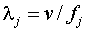

1. Description
This module simulates waves in a ripple tank. The user can insert either point sources, which generate circular waves, or line sources, which generate waves whose wavefronts are straight lines. The plane of the undisplaced water surface is the x-y plane. Waves travel at speed v on the surface of the water. The index j = 1,2.. is used to label the waves coming from the different sources, and the total disturbance at the position (x,y) at time t, call it u(x,y,t), is the sum of all the individual waves:
(a) Point Source
Consider a plunger with a small disk on its end. The disk is touching the surface of the water, is centered about the position , and is small enough to be considered a point source. The plunger is performing simple harmonic motion of frequency fjand is exerting a simple harmonic force on the surface of the water. This motion will generate a circular wave of wavelength  emanating from the source point. The wave number for this wave is  and its angular frequency is
and its angular frequency is
Let P = (x,y) be a point on the surface. The distance from the source point to P is
The disturbance very near the source is a bit complicated and we will not discuss its mathematical form here, other than to say that the module calculates it correctly. The disturbance at P due to the jth point source is given to a good approximation, as long as , by the formula
where  is the "amplitude factor" or "source strength" for the jth wave.
is the "amplitude factor" or "source strength" for the jth wave.
(b) Line Source
Consider a very long, thin board which is touching the surface of the water and performing simple harmonic motion of amplitude , frequency fj, and initial phase . Furthermore let the normal to the surface of the board make on angle with the positive x-axis. This will generate a wave amplitude of , and wavelength , which is traveling in the direction specified by the angle .
Let P be a point on the surface whose coordinates are (x,y). The displacement at P at time t due to this wave is given by the formula
where, is the propagation number of the wave, and is its angular frequency.

Created by
Srihari Angaluri
and Kiril Vidimce
Send comments to comments@webtop.org